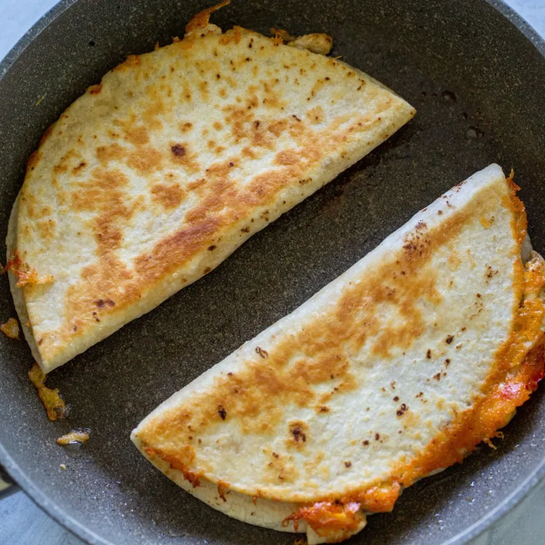

Chicken Quesadilla

Ingredients
- 6 flour tortillas
- 2 cups Mexican cheese
- 1 lb chicken breast cut into small pieces
- 1 tbsp oil
- 1/2 large bell pepper diced
- 1/2 yellow onion diced
- 1 tbsp taco seasoning
- 2 tbsp unsalted butter
Steps
- Preheat a skillet with oil on medium heat. Add in chicken and taco seasoning. COok for 4 minutes
- Add in bell pepper and onion, cook for another 5 minutes or untilchicken and veggies gain color. Set aside
- On a clean skillet, add a bit of butter and place a tortilla on top. On half the tortilla add cheese, the chicken mixture, and cover it with more cheese. Fold the tortilla over to close
- Once the tortilla is golden, flip it over and cook for a few more minutes until that side is golden also. Make sure the cheese has melted.
- Serve while the quesadillas are still warm